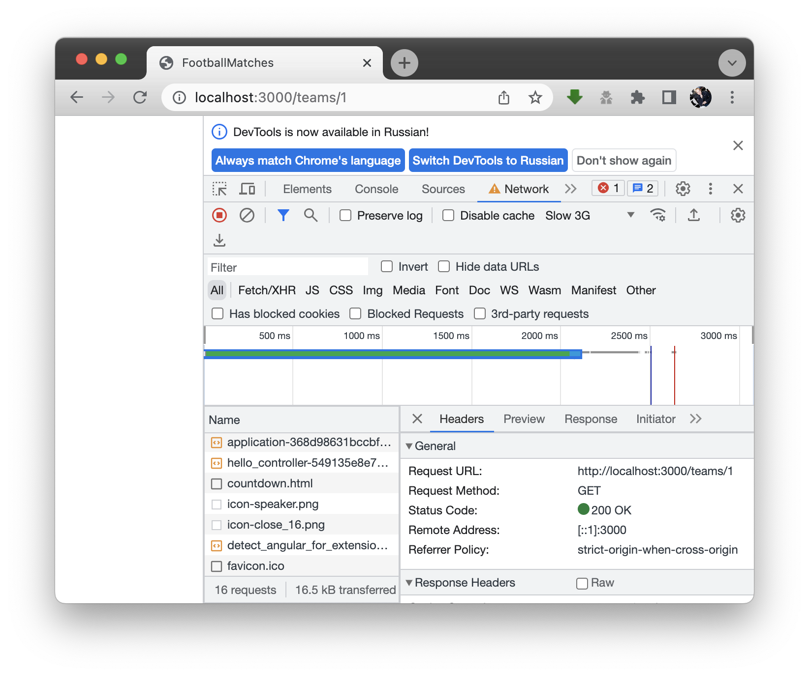

понимание модели - MVC
понимание модели - MVC
1) Клиент отправляет запрос

2) После Rack и Router запрос приходит на контроллер
С
class TeamsController < ApplicationController
def show
@team = Team.eager_load(:players)
.find(params[:id])
# rendering app/views/teams/show.html.erb
end
...
end
3) Обращаемся в коде к модели (ActiveRecord ORM)
M
Team.eager_load(:players)
.find(params[:id])
ORM сформирует и отправит SQL запрос в СУБД
4) Рендерится view и страница возвращается клиенту
V
<%= @team.name %>
...
ActionPack с последнего расширения к первому будет рендерить страницу (erb -> html)
 RSpec - тестирование
RSpec - тестирование


 СУБД postgresql
СУБД postgresql
 Немного достижений
Немного достижений